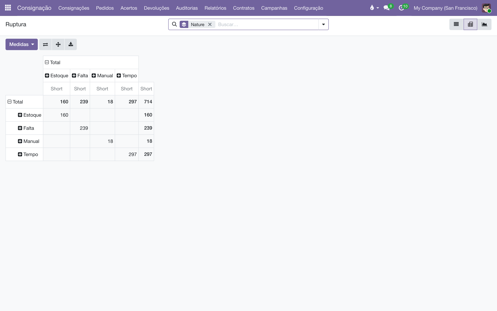

Acerto de consignação
Uma tela por cliente: o mapa da prateleira, o que o cliente informou que vendeu, o que repor e o que volta — e um clique que despacha os documentos certos, cada um do tipo certo.
Visão geral
O acerto é o único momento em que a consignação vira venda. A rotina gira em torno da operação de consignação (CO) — um documento de trabalho, numerado na série CO/, um por cliente por rodada. Nele o operador carrega o mapa da prateleira, digita o que o cliente reportou como vendido, decide reposição e devolução, e clica em Executar. A operação então se desdobra nos documentos:
| Coluna preenchida | Documento gerado | O que é |
|---|---|---|
| Acerto > 0 | Venda S + baixa ACERTO/ | Um pedido de venda de verdade (este sim é receita) e a transferência que tira o vendido da prateleira rumo ao cliente. |
| Reposição > 0 | Pedido C de reposição | Um pedido de consignação, em rascunho, para o comercial revisar e confirmar. Nunca fatura. |
| Devolução > 0 | CR (devolução) | O pedido de devolução: puro estoque de volta, nunca uma venda. |
Qualquer combinação é válida — uma operação só de reposição é uma remessa pura (nada vendido ainda). Além do dia a dia, o módulo traz o quadro kanban da equipe, o mapa em PDF para o cliente, a régua de cobrança das devoluções ("puxadas"), o indicador de saúde por título e os relatórios de ruptura e cobertura de campanhas.

Configuração
Tudo fica em (o mesmo painel aparece em , seção Consignação; o menu de Configuração é visível só para administradores do sistema):
| Bloco / campo | O que controla |
|---|---|
| Análise do Acerto — Janela de vendas recentes (padrão 3 meses) | Quantos meses a coluna Vendas da operação soma ao mostrar o histórico recente de cada título naquele cliente. |
| Situação dos títulos consignados — Ok até (45), Atenção até (60), Crítico até (120) dias | Os limiares da etiqueta de saúde por título: Ok → Atenção → Crítico → Sem retorno, contando os dias desde o último acerto do título naquele cliente. |
| Ruptura — Alvo de campanha vencido após (30 dias) | Cliente de campanha em curso sem acerto há mais que isso entra no relatório Ruptura como Tempo (alvo que ninguém está perseguindo). Verificado toda noite. |
| Mapa de Consignação (PDF) — Texto padrão do mapa | O texto que abre o mapa impresso ou enviado por e-mail ao cliente. |
| Movimento do Acerto — Operação da baixa do acerto | O tipo de operação (série ACERTO/) da baixa que tira o vendido da prateleira. Criado sozinho no primeiro acerto; separado das entregas do armazém de propósito. |
| Cobrança de Devolução (CR) — Cobrar devoluções pendentes, Prazo tolerável de devolução (30 dias), Lembrete em (25%), Ligação em (40%), Aviso geral em (65%), Gerente de escalonamento, Texto do e-mail de pedido de devolução | A régua das "puxadas" — detalhada abaixo. Desligar a chave-mestra silencia tudo. |
- Etapas do quadro — em a equipe renomeia, reordena e recolhe as colunas do kanban (as padrão são A Fazer, Fazendo e Feito). Uma etapa Recolhida no Kanban conta como "concluída" para as rotinas em lote.
- Canais de conversa — o módulo cria dois canais no aplicativo Conversas: Consignação / Operações (respostas de clientes nas operações) e Consignação / Devoluções (toda a conversa e os alertas da cobrança de devoluções).
- Automações — três rotinas rodam sozinhas: finalização das operações concluídas (a cada 30 min), cobrança de devoluções (diária) e atualização da idade de prateleira, alvos e cobertura (diária, de manhã).
Gerar as operações do mês
- Acesse .
- O assistente mostra o alcance antes de fazer qualquer coisa: Consignações abertas (contratos ativos com saldo em prateleira), Já com rascunho (serão puladas) e A criar.
- Clique em Confirmar. Nasce uma CO em rascunho por consignação aberta, atribuída ao responsável (o líder da equipe do contrato, editável), e todas aparecem na coluna A Fazer do quadro.
Um cliente cujo rascunho ainda está no quadro nunca ganha uma segunda operação — a rotina o pula para não duplicar. Um rascunho estacionado numa coluna recolhida (como Feito) não bloqueia: para o sistema, coluna recolhida é assunto encerrado. Se não houver nada a criar, o assistente diz isso com todas as letras e oferece o botão Abrir os rascunhos — as operações já existem, esperando serem executadas.
Executar um acerto, passo a passo
- Abra a operação do cliente em (ou crie uma: só o Cliente basta — o contrato, a prateleira e o responsável se resolvem sozinhos).
- Clique em Mapa. As linhas se preenchem com tudo que está na prateleira do cliente, com o preço e o desconto que o contrato manda — ver Como o preço e o desconto se formam.
- Leia as colunas de contexto de cada título:
- Em mãos — seu estoque no armazém (o limite físico de qualquer reposição);
- Vendas — o que este cliente vendeu deste título na janela recente (acertos feitos no sistema ou, para título nunca acertado aqui, o que as notas fiscais importadas dizem). O ícone ao lado abre os pedidos de venda que compõem o número;
- Mapa — o saldo na prateleira (vivo enquanto rascunho; congelado quando a operação roda);
- Dias e Situação — há quanto tempo o título não acerta, com a etiqueta Ok / Atenção / Crítico / Sem retorno.
- Digite na coluna Acerto o que o cliente informou como vendido, título a título. A Reposição se sugere sozinha (igual ao vendido, para a prateleira voltar ao que era) e continua editável.
- Se quiser recolher algum título, digite a quantidade na coluna Devolução.
- Opcional: clique em Aplicar Campanhas para sobrepor as metas das campanhas em curso do canal deste cliente (veja Campanhas).
- Clique em Executar. A operação congela o mapa, registra as rupturas e despacha os documentos: a venda S com a baixa ACERTO/, o Pedido C de reposição (em rascunho, para o comercial confirmar) e o CR de devolução — cada um só se a coluna correspondente tiver valor.
- Os botões inteligentes Acerto, Pedido e Devolução abrem cada documento gerado. A operação fica Confirmado.

Se alguma reposição pedir mais do que existe Em mãos (a célula fica vermelha), o Executar para e abre o diálogo Estoque insuficiente, listando as linhas excedentes. Você pode Remover e Executar — zera a reposição dessas linhas e roda o resto — ou cancelar e ajustar à mão. Nenhum plano impossível chega ao armazém.
Mapa 10, cliente vendeu 4 e quer devolver 2: digite Acerto 4 e Devolução 2. O Executar gera a venda S de 4 (com baixa ACERTO/ de 4), o Pedido C repondo 4 e o CR trazendo 2. A prateleira termina com 4 + 4 repostos = 8.
Depois do Executar: finalização automática
Não há botão de finalizar. Uma rotina de meia em meia hora verifica cada operação confirmada e, quando todos os documentos dela terminaram — a venda entregue e faturada, o Pedido C confirmado e entregue, a devolução validada no armazém —, muda o status para Finalizado e registra no histórico: "Consignação finalizada: toda a logística e faturamento encerrados."
Cancelar e recomeçar
Cancelar funciona só em rascunho — operação aberta por engano ou adiada pelo cliente. Uma operação já executada não pode ser cancelada: o Executar valida a transferência na hora, então o estoque já saiu da prateleira do cliente e a venda já existe. Cancelar desfaria só o papel e deixaria a baixa de pé — mercadoria fora da prateleira sem venda atrás dela. O caminho de volta de um Executar errado é uma operação nova que compense, ou um ajuste pelo inventário de auditoria.
Como o preço e o desconto se formam
Cada linha do acerto tem Preço Unitário e Desc.%, e os dois saem do contrato. Qual dos dois campos recebe a redução depende de o contrato ter lista de preços:
| No contrato | Preço Unitário | Desc.% |
|---|---|---|
| Lista de preços com regra de percentual | O preço de tabela cheio. | O percentual da lista. O Desconto Padrão do contrato não se aplica por cima. |
| Lista de preços com preço fixo ou fórmula | O preço que a lista determina. | Zero — o preço da lista é o preço, e não há percentual a declarar. |
| Sem lista de preços | O preço de tabela do produto. | O Desconto Padrão do contrato. |
Uma lista de 30% e um contrato com desconto padrão de 40% descontavam duas vezes: R$ 100,00 viravam R$ 70,00 pela lista e R$ 42,00 com os 40% por cima, onde o combinado eram R$ 60,00. Os dois números são plausíveis, e o erro passava despercebido. Hoje, havendo lista, é ela quem diz o desconto.
Os dois campos são editáveis linha a linha, e o que você digitar prevalece. Eles seguem adiante: a venda S e o Pedido C de reposição nascem com o mesmo preço e o mesmo desconto do acerto, e a nota de remessa lê o desconto da linha para declarar o vDesc — um Pedido C sem desconto carimbado sai com DANFE sem desconto.
Para o desconto viver no campo próprio em vez de se diluir no preço unitário, a opção Descontos do Odoo precisa estar ligada. Ela é ligada automaticamente pelo módulo Canal de vendas do cliente.
O mapa em PDF: imprimir e enviar
- Imprimir Mapa — no formulário da operação, gera o PDF do mapa (com o texto padrão das Definições no topo) para levar ou conferir com o cliente.
- Enviar Mapa — abre o e-mail já endereçado ao cliente e aos Destinatários dos Relatórios do contrato, com o PDF anexo.
- Em lote, pela seleção — na lista ou no kanban, selecione operações e use : envia direto (sem janela), cada uma aos próprios destinatários, e avisa quantos foram enfileirados e quem foi pulado por não ter e-mail.
- Em lote, fechado — é a rotina do mês: ela mesma calcula as operações elegíveis (rascunhos fora das etapas concluídas), mostra o total e pede confirmação antes de enviar. Não há como selecionar errado.
Quando um cliente responde ao e-mail, a resposta cai no histórico da operação, o responsável (que é seguidor automático) a recebe na caixa de entrada, e um aviso aparece no canal Consignação / Operações. O filtro Resposta da lista mostra as operações com mensagem de cliente ainda não lida.
Campanhas: o sortimento-alvo por canal
Uma campanha (série CP/) define quantos exemplares de cada título as prateleiras de um canal devem ter. Em :
- Crie a campanha com nome, Canal de Vendas (o público: os clientes cujo contrato ativo está nesse canal e na mesma editora da campanha — o contador Clientes mostra quantos são) e a janela De / Até. Só campanhas ativas e dentro da janela ficam Em curso e valem como meta.
- Monte a lista de títulos pelo Catálogo — o mesmo navegador de produtos de Vendas e Compras: navegue, ajuste quantidades, e cada título vira uma linha com seu Alvo. As colunas ISBN, publicação, disponibilidade e categoria ajudam a separar lançamento de catálogo.
- Acompanhe na própria linha a cobertura: Prateleiras (quantos clientes o alvo precisa alcançar), Precisa (alvo × prateleiras), Estoque, A caminho, Atende prat., Cobre % e Faltará — o que a campanha não consegue cobrir sem imprimir ou comprar mais. Atualizado toda manhã.
Um canal é um registro só, compartilhado por todas as editoras do grupo (ver a grade dos canais). Por isso campanha e acerto se encontram por canal e por empresa: uma campanha de um selo não vale num acerto de outro, ainda que o canal seja o mesmo.
Na operação, Aplicar Campanhas aplica todas as campanhas em curso do canal do cliente, na editora da operação — não há o que escolher: o gestor define, a operação executa. Cada título ganha seu Alvo; título que o cliente não tem entra como linha nova (em azul); título que nem você tem em estoque é pulado e listado no histórico. Quando duas campanhas pedem o mesmo título com alvos diferentes, vence o alvo maior — a única regra que nunca encolhe um sortimento. A reposição passa a mirar o alvo: repor = alvo − (mapa − vendido), limitado ao Em mãos; o que não dá para mandar aparece em Faltou. E o resultado real de cada aplicação (quanto colocou, quanto faltou, o que nem foi) fica registrado no histórico da campanha — onde o gestor lê.
Cobrança de devoluções (as "puxadas")
Toda devolução (CR) nasce com um relógio: o Prazo da Devolução = data de criação + o prazo tolerável das Definições. A partir daí, uma rotina noturna sobe uma escada de cobrança — cada degrau numa porcentagem do prazo, então mudar os dias reflui o calendário inteiro:
| Momento (padrão) | O que acontece |
|---|---|
| Criação (dia 0) | O relógio começa. O CR pode ser enviado ao cliente a qualquer momento com Enviar Pedido de Devolução (e impresso com Imprimir Devolução). |
| Lembrete — 25% (~dia 7) | O pedido de devolução é reenviado por e-mail e uma atividade de ligação é agendada para o responsável, com vencimento no checkpoint seguinte (40%, ~dia 12). Etiqueta: Lembrete enviado. |
| Aviso geral — 65% (~dia 20) | Um alerta vermelho cai no canal Consignação / Devoluções: a equipe inteira vê que o prazo está fechando sem devolução. Etiqueta: Equipe avisada. |
| Escalonamento — 100% (vencido) | O CR está vencido: alerta no canal e uma atividade para o Gerente de escalonamento assumir. Etiqueta: Escalado. |
Cada degrau dispara uma única vez (rodar a rotina de novo, ou recuperar um dia perdido, não duplica cobrança), e tudo para no momento em que a mercadoria volta (transferência validada) ou o CR é cancelado. Na lista de , os filtros Vencidos e Em cobrança e a etiqueta colorida de Estágio da Cobrança mostram a fila de puxadas de relance. Ao liberar o CR para a logística, o prazo combinado vira a data programada da transferência RET/ — o armazém também enxerga o prazo.
Anote no CR tudo que acontecer ("ligamos, prometeram sexta") — cada nota interna e cada resposta do cliente é replicada no canal Consignação / Devoluções, então a conversa inteira de cada puxada fica num lugar só.
A saúde de cada título (Ok / Atenção / Crítico / Sem retorno)
Cada título consignado carrega uma etiqueta de saúde, pelos dias desde o último acerto daquele título naquele cliente (título nunca acertado conta desde que chegou à prateleira — senão o encalhe pareceria novidade). Os limiares são os das Definições. A etiqueta aparece em dois lugares, sempre com a mesma régua:
- nas linhas da operação (colunas Dias e Situação) — para decidir na hora do acerto o que insistir e o que puxar de volta;
- no relatório — com filtros Crítico, Sem retorno e Vencidos, e ordenável por Dias para pôr o mais parado no topo. Atualizado toda manhã.
Relatórios
| Relatório (em ) | Pergunta que responde |
|---|---|
| Na Prateleira | O que está consignado agora, por cliente e canal — com a idade e a etiqueta de saúde de cada título. |
| Inventário | A contagem das prateleiras, agora também com a coluna Alvo das campanhas ao lado do contado — dá para medir prateleira contra meta no pivô. |
| Razão da Prateleira | Cada unidade que entrou e saiu de cada prateleira, vinda de duas fontes lado a lado: Estoque Odoo (as transferências reais) e Fiscal (NFe) (as notas importadas da migração). Agrupe por Fonte para ver onde as duas discordam — a diferença encolhe sozinha conforme os acertos passam a rodar no sistema. |
| Cobertura | O planejamento das campanhas em curso, título a título: alvo, prateleiras, o que precisa, o que tem, o que está a caminho e o que Faltará. Filtro Vai faltar para a lista de reimpressão/compra. |
| Ruptura | Toda meta de campanha não cumprida, com causa: Estoque (não tinha e não há chegando), Manual (tinha, mas o operador mandou menos), Falta (a campanha do canal nem foi aplicada na operação) e Tempo (cliente de campanha sem acerto há mais que o tolerado — detectado pela rotina noturna). Pivô por natureza, cliente, título, campanha, canal e mês. |
| Campanhas (cobertura por cliente) | O alvo de cada campanha contra o que de fato chegou a cada cliente — inclusive o universo invisível: o filtro Nunca recebeu lista os títulos que a campanha quer e o cliente nunca teve. |
Falta e Tempo são as duas que ninguém digita — elas medem o que não aconteceu:
| Falta | Tempo | |
|---|---|---|
| O que houve | A operação rodou sem Aplicar Campanhas — o alvo nunca chegou a ser pedido | Não houve operação nenhuma |
| Quem percebe | O próprio Executar, comparando campanhas em curso com as aplicadas | Um relógio — ausência não dispara nada |
| A conta | Alvo − prateleira, sem descontar o vendido | Alvo − prateleira, por cliente parado |
| De quem é a linha | Da operação; reexecutar reescreve | Da rotina; refeita do zero toda noite |

Na lista de operações, a coluna Canal de Vendas e o agrupamento de mesmo nome respondem "quanto acertou cada canal no mês". O canal vem do contrato (ou da ficha do cliente, na falta dele) e fica carimbado: o acerto é uma apuração fechada, e não muda de canal porque alguém corrigiu a ficha depois.
Além dos relatórios, o menu lista todas as vendas S nascidas de acertos — só leitura, criadas apenas pela operação, nunca à mão. No aplicativo Vendas, os filtros Acertos de Consignação e Vendas Normais e o agrupamento por Contrato separam os dois mundos.
Regras que o sistema garante
| Regra | Por quê |
|---|---|
| Só se acerta cliente com contrato ativo. Sem contrato (ou suspenso), a tela avisa em amarelo e o Executar bloqueia. | O acerto vende da prateleira; sem contrato ativo não há prateleira válida. |
| Executar exige o mapa carregado e pelo menos uma decisão (vendido, reposição ou devolução). | Uma operação vazia não tem o que despachar. |
| O mapa congela no Executar. Enquanto rascunho, a coluna Mapa é viva (lê a prateleira agora); executada, ela vira o retrato que foi acertado — e é esse retrato que o PDF e o histórico mostram para sempre. | A baixa muda a prateleira logo em seguida; sem congelar, as operações antigas mentiriam. |
| Devolução nunca excede o que sobra na prateleira (mapa − vendido). Digitou a mais? O sistema ajusta na hora e explica. | Não dá para devolver livro que acabou de ser vendido. |
| Devolver e repor o mesmo título se compensam. Digitou 3 para devolver e 2 para repor? Vira 1 a devolver e 0 a repor. | Mandar e trazer o mesmo livro na mesma rodada é frete pago para nada. |
| Reposição acima do Em mãos não passa — célula vermelha na digitação, diálogo "Estoque insuficiente" no Executar. | Não se promete ao cliente livro que não existe no armazém. |
| Um rascunho no quadro bloqueia gerar outro para o mesmo cliente. | Duas operações abertas acertariam a mesma prateleira duas vezes. |
| Operação cancelada com documentos não volta a rascunho. | Ela ainda aponta para os documentos cancelados; reexecutá-la criaria nada, silenciosamente. Operação nova, história limpa. |
| A venda S nasce carimbada com a operação e as campanhas aplicadas. | Receita rastreável até a campanha que a causou — nenhum cálculo posterior consegue reconstituir isso. |
Solução de problemas
O "⚙️ Gerar Operações" diz "Nada a criar".
Todas as consignações abertas já têm rascunho no quadro. Use Abrir os rascunhos e execute-os. Se o aviso for "Nenhuma consignação aberta", nenhum contrato ativo tem saldo em prateleira — remeta primeiro.
A coluna Vendas mostra número, mas nunca acertei este título aqui.
É o histórico fiscal: para títulos ainda sem acerto no sistema, a coluna lê as notas importadas (XML). Assim que o primeiro acerto rodar aqui, a fonte passa a ser o próprio sistema — nunca as duas somadas, para não contar a mesma venda duas vezes.
Digitei a reposição à mão e ela voltou ao valor sugerido.
Isso só acontece em rascunho, quando algo que alimenta a sugestão muda (o vendido, o alvo). Depois do Executar o valor digitado é definitivo — decisão não é sugestão.
Uma operação está Confirmada há dias e não finaliza.
Algum documento dela está aberto: venda sem fatura, Pedido C sem confirmar/entregar, ou devolução sem validar no armazém. Os botões inteligentes da operação mostram qual.
O cliente respondeu o e-mail do mapa e ninguém viu.
A resposta está no histórico da operação e no canal Consignação / Operações. Confira se o responsável está definido — é ele o seguidor automático que recebe na caixa de entrada. O filtro Resposta lista as operações com mensagem não lida.
- Acordos de consignação — o contrato, a lista de preços e o desconto que o acerto herda.
- Remessas e retornos — os documentos COM/OUT/, COM/MOV/, COM/IN/ e o fluxo do CR depois do acerto.
- Fiscal da consignação — a posição fiscal da venda S e a nota do Pedido C.
- Auditoria pelo XML — conferir o mapa contra as notas fiscais importadas.
Glossário
Todo documento do sistema carrega um prefixo na numeração — CO/2026/00001 é um acerto, AT/2026/00042 é um chamado. A lista é a mesma em todos os manuais:
| Prefixo | O que é |
|---|---|
C | Pedido de consignação: o pedido que põe livros na prateleira do cliente — C00001, no lugar do S da venda comum. |
CO/ | Consignação, o documento do acerto: registra o que o cliente vendeu e vira venda — CO/2026/00001. |
CR/ | Retorno de consignação: o documento que pede a devolução dos exemplares da prateleira — CR/2026/00001. |
CA | Auditoria de consignação: reconstrói o saldo da prateleira do cliente pelas notas fiscais e registra o ajuste — CA00001. |
CP/ | Campanha de consignação: o sortimento-alvo por canal — quantos exemplares de cada título as prateleiras devem ter — CP/2026/0001. |
AC/ | Acordo de Consignação: o contrato com a livraria, dono da prateleira — AC/2026/00001. |
COM/OUT/ | A série da remessa de consignação ao cliente, do armazém à livraria — COM/OUT/2026/00001, no espelho do WH/OUT. |
MP/OUT/ | A série das entregas de marketplace (Olist): o pacote de pessoa física, na caixa de despacho própria do depósito — MP/OUT/2026/00001. |
COM/MOV/ | A série dos fluxos internos de prateleira da consignação — COM/MOV/2026/00001. |
COM/IN/ | A série do retorno de consignação, da prateleira ao armazém — COM/IN/2026/00001, no espelho do WH/IN. |
REM/ | Remessa: a nota de simples remessa, sem cobrança — a numeração vem do diário fiscal REM. |
COL/ | Coleta: o lote do pedido de coleta às transportadoras — COL/2026/00001. |
AT/ | Atendimento: o chamado nascido do e-mail comercial — AT/2026/00001. |
MBX/ | O lote de envio de metadados à Metabooks — MBX/2026/00001. |
Impostos de Direitos Autorais/ | O lote da fatura acumuladora do IRRF retido dos autores no mês. |
Royalties entre Empresas/ | O lote da fatura acumuladora de royalties entre as empresas da casa. |
| Do próprio Odoo | |
S | Pedido de venda comum — S00001; o pedido de consignação usa o C no lugar. |
WH/OUT | Entrega comum do armazém: a transferência de saída padrão do Odoo. |
WH/IN | Recebimento do armazém: a transferência de entrada padrão do Odoo. |
Bases antigas guardam transferências nas séries COM/ e RET/, de antes da separação por direção — o histórico não é renumerado.